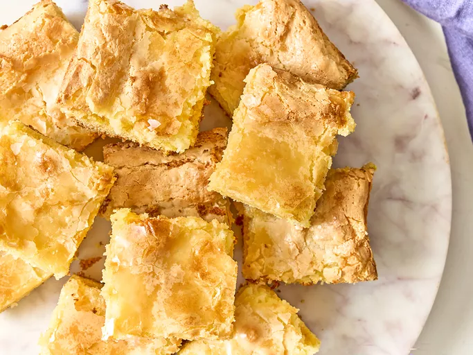

<!DOCTYPE html>
<html lang="en">
</html>
<head>
    <meta charset="UTF-8">
    <title>Marcus Pie</title>
    <body>
        <h1>Marcus Pie</h1>
        <a href="../index.html"><h3>Home</h3></a>
         
        <strong><h2>Description</h2></strong>
         <p1>Rich, gooey, and downright irresistible, this Neiman Marcus Cake is a decadent twist on classic butter cake. <br>
             With a buttery yellow cake base topped with a creamy, sweet cream cheese layer, every bite melts in your <br>
             mouth and keeps you coming back for more — the perfect crowd-pleaser for any occasion.</p1>
         <strong><h2>Ingredients</h2></strong>
        <ul>
            <li>1 (15.25 ounce) package yellow cake mix</li>
            <li>4 large eggs, divided</li>
            <li>1/2 cup butter, melted</li>
            <li>1 teaspoon vanilla extract</li>
            <li>3 ½ cups confectioners' sugar</li>
            <li>8 ounces cream cheese, softened</li>
        </ul>
        <strong><h2>Steps</h2></strong>
        <ol>
            <li>Preheat the oven to 350 degrees F (175 degrees C). Grease a 13x9-inch baking pan.</li>
            <li>Combine yellow cake mix, 2 eggs, butter, and vanilla in a large bowl; mix well. <br>
            The batter will be stiff. Add cake batter to the prepared pan and spread evenly.</li>
            <li>Combine confectioners' sugar, cream cheese, and the remaining 2 eggs in <br>
                a separate bowl; mix well and pour over the top of the cake batter.</li>
            <li>Bake the cake in the preheated oven until a toothpick inserted into the center <br>
                comes out clean, about 35 minutes.</li>
            <li>Let cake cool completely before you cut it to achieve those delicious layers.</li>
            
            
        </ol>
    </body>
</head>